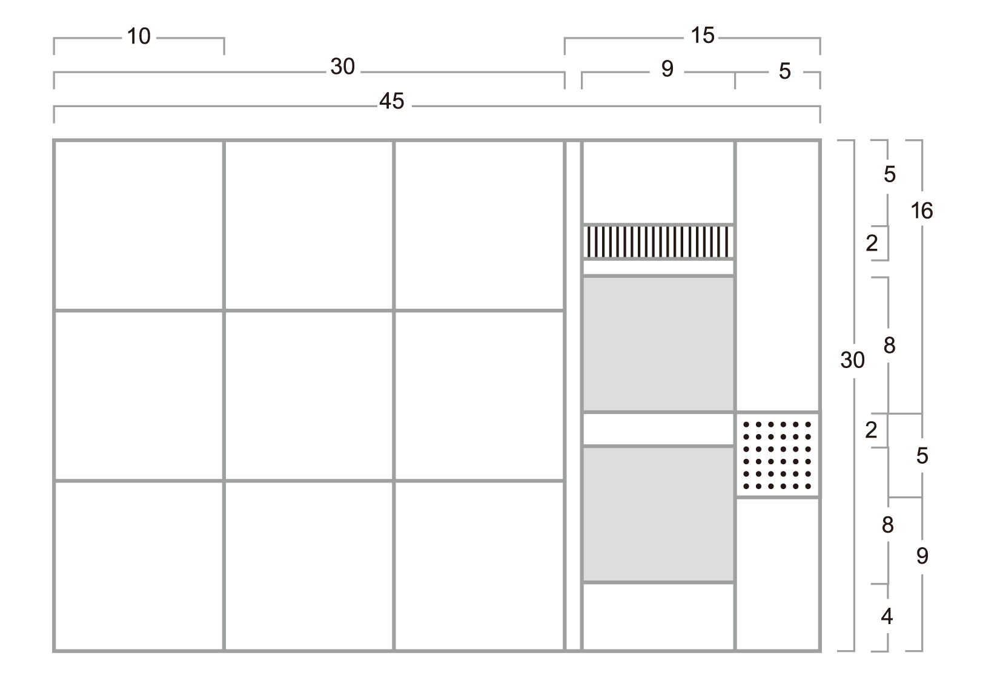
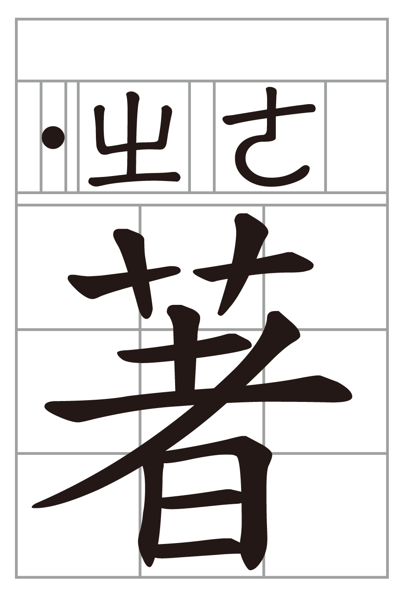

國語注音符號第一式，簡稱「注音符號」，自民國二年創制，民國七年公布，其後復經不斷補充修訂，乃臻於完善。民國二十四年，教育部又公布「國字旁注之注音符號印刷體式表」，並據以製作附有注音的國字銅模，補救國字教學的困難，成為學習國語的最佳利器。
注音符號的制訂，是承繼中國傳統聲韻學及詩歌押韻原理，採聲、韻、調分析法，取合於雙聲疊韻的古代漢字簡化而成。所以用注音符號來拼國字，就等於是以漢字來拼注漢字，發音最為精準，而且一音一符，學習起來也極為簡易。
注音符號不僅可以用來拼注國字的字音，成為國字正音的工具，同時也可以用在字典的編排上，成為一套良好的字音編序及檢索系統。至於用在小學教科書或兒童讀物上，則成為學習「國語」、認識「國字」的最佳法門。學會了注音符號，也就是學會了一套自學工具，無論是閱讀附有注音的書報雜誌，或是利用「注音輸入法」來使用電腦，都可以得心應手，受用無窮。
在電腦資訊極為發達的今天，一切講求標準化。文字方面，教育部早在民國八十三年即已正式公布「國字標準字體母稿」，提供社會各界使用。現各級學校教科書、新聞媒體以及資訊界，多已普遍採用。惟注音符號由於公布已久，雖然國民小學國語科列為必要的教學，但是有關書寫的筆畫、筆順、拼注方式等，仍感時有參差；而資訊業所製作的注音符號，與早先公布之印刷體式，又每有出入，於是造成諸多無謂的困擾。
教育部有見及此，乃邀約國語語音學專家學者張孝裕、林國樑、張文彬、曾榮汾、胡建雄、蘇茂生諸教授及本人，組成專案小組，由本人任召集人，胡建雄教授負責設計指導，蘇茂生教授擔任藝術指導，另委請吳彥成先生設計製作。根據民國二十四年所公布之「國字旁注之注音符號印刷體式表」，重新設計製作「國語注音符號手冊」，包括「國語注音符號體式表」、「國字注音比例參考圖」、「國字注音示例」（橫式、直式兩種）、「國語音節表注音示例」等圖式，以因應實際教學之需要，與印刷業電腦排版科技之運用。
本手冊之編訂，以圖式為主，務求簡單明瞭，一目了然，不致有所疑惑，使注音符號之運用，得以精確而無誤。今以付梓在即，用特略述經緯如上，並對編訂小組諸教授之不辭辛勞，國語推行委員會楊視察永全、助理楊尤雯小姐之行政支援與協調，使本手冊得以順利完成，敬致謝意。
本手冊為因應教學及資訊業、印刷業之實際需求而訂定。
「國語注音符號體式表」中之總表列舉全部注音符號之體式（聲符「」、「 」「
」「 」國音不用。韻符「」，陰平調號「
」國音不用。韻符「」，陰平調號「 」，注音時省略不標）；聲符、韻符說明表，說明筆順、筆畫及其寫法；調號說明表，說明其類別、性質及標注之位置。
」，注音時省略不標）；聲符、韻符說明表，說明筆順、筆畫及其寫法；調號說明表，說明其類別、性質及標注之位置。
本手冊所提供之「國字注音比例參考圖」及「國字注音示例」皆附有直式、橫式兩種注音符號標注方式。
「國字注音比例參考圖」中，國字之長寬比例為30:30，注音符號的長寬比例直式為30:15，橫式為15:30，而單個注音符號之長寬比例則有9:9、9:8、8:9三種，可視實際需要選擇使用。
「國語音節表注音示例」係依開、齊、合、撮四呼順序排列，將有文字之音節，各舉一字以直式注音為例。
本手冊所列之注音符號體式、國字注音比例參考圖皆可自教育部網站下載。

註：1. 聲符「」、「」「」國音不用。
2. 韻符「」注音時省略不標。
3. 本手冊據民國24年「國字旁注之注音符號印刷體式表」重新設計製作，據該表韻符「ㄧ」直式注音寫成「ㄧ」，橫式注音寫成「」。惟時空環境變遷，為便於資訊交換及使用習慣等因素，韻符「ㄧ」於橫式注音時以寫成「ㄧ」為原則，也可寫成「」。
| 符號 | 筆順動畫 | 筆畫數 | 說 明 |
|---|---|---|---|

|
|
一 畫 | |

|

|
二 畫 | 末筆不捺。 |

|

|
二 畫 | 末筆不鉤。 |

|

|
二 畫 | 第二筆與第一筆起筆相接。 |
| 二 畫 | |||

|

|
三 畫 | 中筆斜貫而下。 |

|
|
一 畫 | |

|

|
二 畫 | |

|
二 畫 | ||

|

|
二 畫 | |

|
|
二 畫 | 第一筆與第二筆起筆相接。 |

|

|
二 畫 | 第一筆豎挑不過第二筆。 |
| 一 畫 | |||
| 二 畫 | |||

|
 
|
四 畫 | 可省作三畫，筆順為： |

|

|
三 畫 | |

|
 
|
三 畫 | 第三筆與第二筆起筆相接。 |

|

|
四 畫 | 中為一點。可省作三畫，筆順為： |

|

|
二 畫 | |

|

|
二 畫 | 末筆不鉤。 |
| 二 畫 |
| 調名 | 符號 | 說 明 | 位 置 |
|---|---|---|---|
| 陰平 | |
以一短橫代表高平之聲調，注音時可省略不標。 | 標注在字音最後一個符號右上角。 |
| 陽平 | 以向右上斜出代表上升之聲調。 | 同上。 | |
| 上聲 |  |
以鉤符代表先降後升之聲調。 | 同上。 |
| 去聲 |  |
以向右下斜出代表下降之聲調。 | 同上。 |
| 輕聲 | 以圓點代表較輕短之變調。 | 直式注音時標注在字音上方，橫式注音時標注在字音前方。 | |
|
聲調標注示例： 一、 陰陽上去四聲調號，無論直式或橫式，標注在字音最後一個符號右上角。 二、 輕聲調號標注： （一） 直式注音標注在字音上方。例如： （二） 橫式注音標注在字音第一個符號前面。例如： 
|
|||

一個注音符號加聲調

二個注音符號加聲調

三個注音符號加四聲聲調

三個注音符號加輕聲調號

一個注音符號加聲調

二個注音符號加聲調

三個注音符號加四聲聲調

三個注音符號加輕聲調號

一個注音符號加聲調
二個注音符號加聲調
三個注音符號加四聲聲調

三個注音符號加輕聲調號
一個符號加聲調

一個符號加輕聲
二個符號加聲調
二個符號加輕聲
三個符號加聲調

三個符號加輕聲

一個注音符號加聲調

二個注音符號加聲調

三個注音符號加四聲聲調

三個注音符號加輕聲調號

一個注音符號加聲調

二個注音符號加聲調

三個注音符號加四聲聲調

三個注音符號加輕聲調號

一個注音符號加聲調

二個注音符號加聲調

三個注音符號加四聲聲調

三個注音符號加輕聲調號
一個符號加聲調

一個符號加輕聲

二個符號加聲調
二個符號加輕聲
三個符號加聲調

三個符號加輕聲

①聲符②韻符③四聲④例字。〔 〕內輕聲變韻字寄此。


附註：
聲符欄之「○」表示「零聲母」。
韻符「」稱為空韻，注音時省略不標。
表中空位為國音缺音。
表中○位為國音缺字。
例字字音依《重編國語辭典修訂本》。
編訂者：教育部國語推行委員會
主任委員：曹逢甫
召集委員：李 鍌
審查委員：張孝裕、林國樑、張文彬、蘇茂生、曾榮汾、胡建雄
編輯小組：楊永全、吳彥成、楊尤雯
執行編輯：吳彥成
封面設計：吳彥成
發行人：曾志朗
發行所：教育部
地址：臺北市中山南路5號
電話：(02)7736-6666
承印者：精通打字印刷有限公司
初版：中華民國八十九年十一月
定價：新臺幣伍拾元
GPN：006429890066
ISBN：957-02-7324-0
編著者：教育部終身教育司
發行人：潘文忠
出版者：教育部
地址：10051 臺北市中正區中山南路5號
電話：(02)7736-6666 傳真：(02)33932319
電郵：http://email.moe.gov.tw/EDU_WEB/sendmail/send.php
出版年月：2017年1月
ISBN：978-986-051-481-0(EPUB)
GPN：4910600045
本手冊採用「創用CC 姓名標示–禁止改作 3.0 臺灣」授權條款釋出。
本授權條款允許使用者重製、散布、傳輸著作（包括商業性利用），但不得修改本手冊，授權條款詳細內容請參見：https://creativecommons.org/licenses/by-nd/3.0/tw/。
本手冊內含注音符號動畫XML、SVG檔，以及相關音檔，另採「創用CC 姓名標示 4.0 國際版本」授權條款提供，可於本手冊首頁獨立下載，歡迎各界利用。利用此些檔案，視為符合政府資料開放授權條款之規定。
電子書設計製作：
汪達數位出版股份有限公司製作
地址：100臺北市中正區重慶南路一段43號11樓之2
電話：(02)26730905
本書相關資訊：
2000年11月書面版初版 ISBN 957-02-7324-0(膠裝)
2017年1月電子書英文版 ISBN ***-***-***-***-*(EPUB)